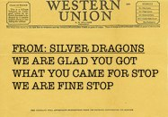
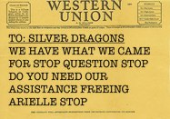

| Katriana: | We now know why the demon spiders are attracted to you. |
| Siiri: | They are attracted to me? I thought this castle was just infested. And what do you mean calling them demons? |
| Katriana: | The demons are attracted to the hair pin. We've encountered this before with other items they are after; they never give up. |
| Siiri: | They're demons? Thats strange, though I guess it would be consistent with the gate that just opened up. |
| Katriana: | We've encountered this before with other items they are after; they never give up. The only option is to get rid of it. |
| Siiri: | What will I do without my hairpin? |
| Katriana: | We know how to deal with it. We can take it away to a safe place in the outer planes. |
| Siiri: | I can't. I just can't give up my hairpin. |
| Katriana: | How much do you really want to change? |
| Siiri: | I really would like to get rid of these spiders. |
| Katriana: | The first step to getting rid of these spiders is putting the hair pin down. |
| Siiri: | (reluctantly puts it down) |
| Katriana: | Let us take this object away so you can enjoy your wedding. |
| Siiri: | I... I can't. I need it. |
| Jytte: | (Somewhat hysterical) Mother I would really just like to have a wedding without worrying about your hair all the time! |
| Siiri: | Ok. Take it and go. But if I ever see another spider I'm going to hunt you down. |


To make a good show of it Edwin immediately cast Tenser's Floating Disk and used Mage Hand to move the hairpin from the top of the dresser to the center of the disk. The rest of the party lined up surrounding the disk, and they marched back to the front hall of the castle. The Ogres were confused, and sent one guard to double-check their story with Siiri. They edged away from the demonic hairpin, and when Edwin created an illusionary puff of smoke one Ogre soiled himself.
Their explanation confirmed, the party was able to leave the castle and march quickly across the cloud bridge. Edwin cast Sending with the Silver Dragons, but they did not need the party's help freeing their daughter.
Once on the far mountain Edwin cast Mordenkainen's Magnificent Mansion. The group expected to find Sabrina and depart the next day.
| Is the fourth segment of the staff within 1000 miles of the Cloud Giant Castle? | yes |
| Is the fourth segment of the staff less than 500 miles away? | no |
| Is the fourth segment of the staff less than 750 miles away? | no |
| Is the fourth segment of the staff less than 875 miles away? | no |
| Is the fourth segment of the staff less than 950 miles away? | no |
| Is the fourth segment of the staff less than 999 miles away? | yes |
| Is the fourth segment of the staff less than 975 miles away? | no |
| Is the fourth segment of the staff less than 987 miles away? | yes |
| Is the fourth segment of the staff possessed by a creature? | yes |
| Is the fourth segment of the staff possessed by a humanoid? | depends |
| Is the fourth segment of the staff below ground? | no |
| Does the possessor of the fourth segment of the staff know that we are coming? | no |
| Is the possessor of the fourth segment of the staff a spellcaster? | no |
| Is the possessor of the fourth segment of the staff an outsider? | no |
| Is the possessor of the fourth segment of the staff a shapechanger? | yes |